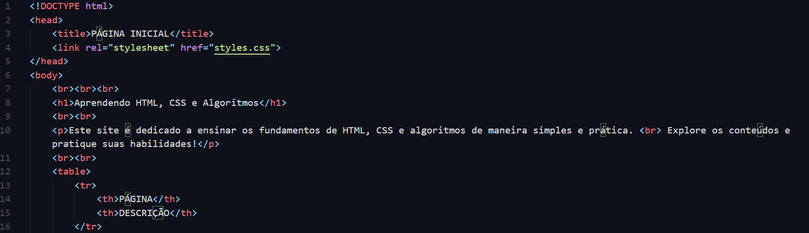
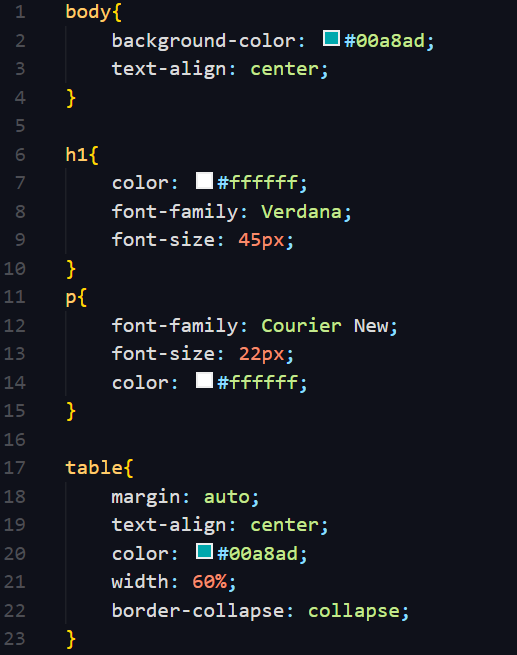

O código-fonte é um conjunto de instruções escritas em uma linguagem de programação que define o comportamento de um software. Ele é a base de qualquer programa ou aplicativo que utilizamos, desde simples sites até complexos sistemas operacionais. O código-fonte é escrito por programadores e, após ser compilado ou interpretado, se transforma em um software executável.
Este é um exemplo básico de uma página HTML que exibe um título, um parágrafo e uma tabela.
Este exemplo aplica estilos a uma página HTML, alterando a cor do fundo e o estilo do texto.
O código-fonte é uma parte essencial do desenvolvimento de software. Compreender como ele funciona e sua importância pode ajudar novos programadores a se tornarem mais proficientes em suas habilidades. Aprender a ler e escrever código é o primeiro passo para criar aplicações inovadoras e resolver problemas complexos no mundo digital.